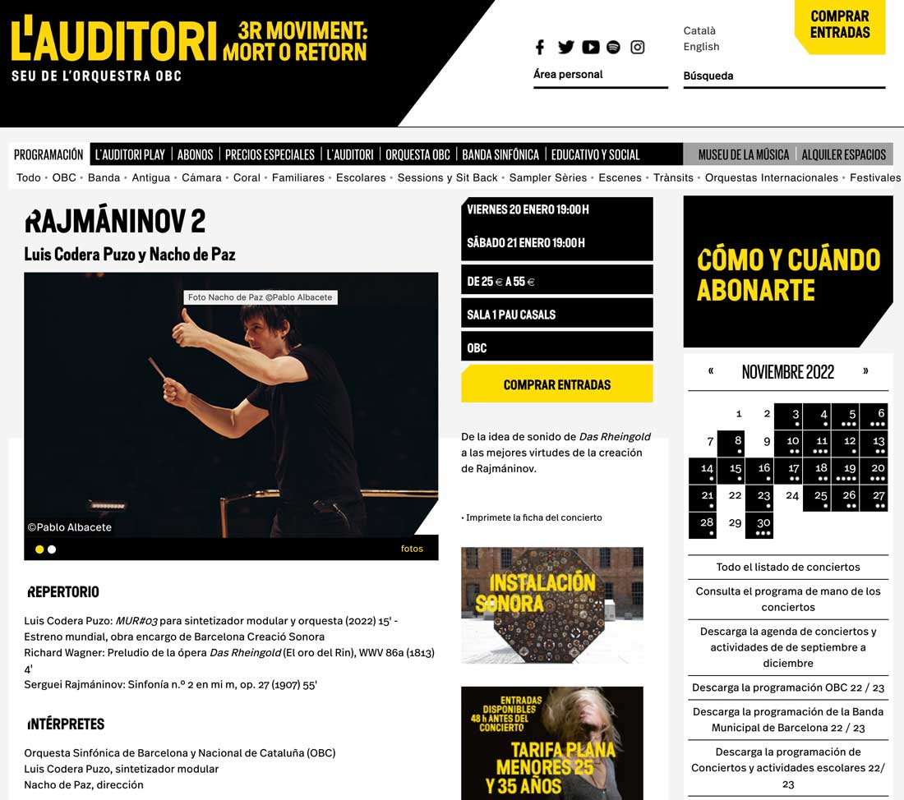

ESP / ENG · Instrumento
Electronic music as an instrument
El uso del sintetizador modular desde la perspectiva y la disciplina del entrenamiento instrumental clásico.
Luis Codera Puzo · Barcelona, 1981 · Música y Pensamiento
Compositor, intérprete de sintetizadores modulares y guitarra eléctrica, comisario. Del primer concierto para sintetizador modular y orquesta a la economía ascética del unísono: el instrumento electrónico abordado con la disciplina performativa del instrumento clásico.
Desplaza para ascender por los capítulos ↓ ocho estancias, del oscilador al catálogo y los textos. Detrás, una onda analógica se decanta en estructura.
I · Agenda & Estrenos
Obras en creación, conciertos de sintetizador modular solista y grabaciones discográficas monográficas en curso:

II · Trayectoria & Formación
Luis Codera Puzo (Barcelona, 1981) se ha distinguido por su dedicación activa al sintetizador modular como instrumento de concierto solista y camerístico. Su técnica instrumental, orientada a la performatividad y a la interacción milimétrica con instrumentistas acústicos, ha dado lugar a obras pioneras como MUR#03 —uno de los primeros conciertos para sintetizador modular y orquesta, estrenado por la Orquestra Simfònica de Barcelona i Nacional de Catalunya (OBC)— o Compression Music, creada con una Beca Leonardo de la Fundación BBVA.
Su música acústica se orienta hacia la forma más destilada de la idea. Piezas como Code is poetry (estrenada por el Quatuor Diotima en la Bienal de Cuartetos de Barcelona) hacen uso de unísonos, notas repetidas y una escritura monolítica que ensancha el espacio de escucha para visibilizar matices microscópicos, como el batimiento o el vibrato natural de las cuerdas.
Formado inicialmente de manera autodidacta, estudió piano, trombón, guitarra eléctrica y percusión antes de titularse en composición en la ESMuC (con Agustí Charles) y realizar el Solistenexam con Wolfgang Rihm en la Hochschule für Musik Karlsruhe. Ha recibido clases y seminarios de compositores como Louis Andriessen, Kaija Saariaho, Enno Poppe, Beat Furrer, Georg Friedrich Haas, Unsuk Chin y Pierluigi Billone.

III · Catálogo de Obras
Obras de cámara, orquesta, instrumento solo y electrónica espacial, ordenadas por orgánico:
MUR#02 (3 pianos afinados)
PITCH MATRIX
Piano I : A4 = 440 Hz · [C D E F# G# A#] (Escala por tonos enteros 0)
Piano II : A4 = 443 Hz · [+12 cents offset] (Batimiento acústico continuo)
Piano III : A4 = 437 Hz · [-12 cents offset] (Intersticio microtonal)
Synth : Dual VCO (Triangle/Saw) tracking 1V/Oct + Lowpass 24dB resonanceAfinaciones acústicas no temperadas generando patrones de interferencia pura en el espacio.
IV · El Sintetizador Modular · Manifiesto y Técnica
Uno de los peligros más evidentes en la música electrónica contemporánea reside en la consideración fetichista del instrumento: el aparato exhibido como un eslogan publicitario o un fetiche visual antes que como un medio riguroso de articulación musical.
El sintetizador modular no es un juguete de aleatoriedades sonoras o efectos automáticos. Es un instrumento físico de concierto donde cada cable, cada atenuador y cada voltaje debe responder a la misma disciplina interpretativa que el arco de un violín o la embocadura de una flauta. Tocamos con los dedos, controlando la envolvente, el tiempo y la respiración en tiempo real.
EURORACK SIGNAL FLOW
VCO 1 (Triangle) ──┐
├──> [VCF 4-Pole 24dB] ──> [VCA] ──> Live Output (Direct)
VCO 2 (Sub Sine) ─┘ ▲ ▲
│ │
[Manual Pressure / Ribbon] ──┴──────────────────┘ (Direct tactile dynamic control)Sin presets ni automatizaciones externas: control táctil y manual de la ganancia y el corte tímbrico.
Ocho tonos armónicos basados en relaciones justas e intervalos analógicos. Generados íntegramente mediante Web Audio API en tu navegador, sin grabaciones externas.
V · Comisariado & Estructuras
El comisariado y la gestión de proyectos ligados a la nueva música no son un añadido administrativo, sino la forma de ser activamente crítico con las inercias del entorno cultural y musical.
«Escuchar la música de los demás con rigor es la primera condición para poder escribir la propia.»
VI · Ideas, Textos y Ensayos
Una selección de los artículos y ensayos de reflexión estética, técnica y sociológica escritos por Luis Codera Puzo. Haz clic en cualquier tarjeta para abrir el lector inmersivo integrado:
El uso del sintetizador modular desde la perspectiva y la disciplina del entrenamiento instrumental clásico.
Crítica al fetichismo del material en la música electrónica y defensa de la dedicación performativa.
Desmontando los lugares comunes del gremio de compositores y la trampa del eslogan «ser uno mismo».
Sobre el estreno de la obra por el Quatuor Diotima y cómo el uso del código revela la naturaleza de la escucha.
Extenso tratado sobre la unificación de timbre, afinación y duración en la composición acústica contemporánea.
La investigación financiada por la Beca Leonardo: compresión dinámica, acústica y electrónica en un solo cuerpo.
La aceleración cultural y la pérdida de la capacidad de sostener una atención dilatada en el tiempo.
Análisis incisivo sobre las estructuras de poder, redes de favores e inercias del entorno compositivo.
Reflexión crítica sobre el relato institucional y la construcción de identidades en la creación contemporánea.
Notas sobre el retorno nostálgico a la tonalidad frente a la conquista de una especificidad sonora irreductible.
Relato y exploración de especies sonoras ficticias catalogadas con rigor etnográfico.
Reflexiones condensadas sobre la acústica, el comportamiento de los materiales y los límites del autor.
VII · Discografía & Contacto
Grabaciones monográficas y lanzamientos en sellos independientes de alta fidelidad:
Consultas sobre encargos, partituras, interpretaciones o conferencias: